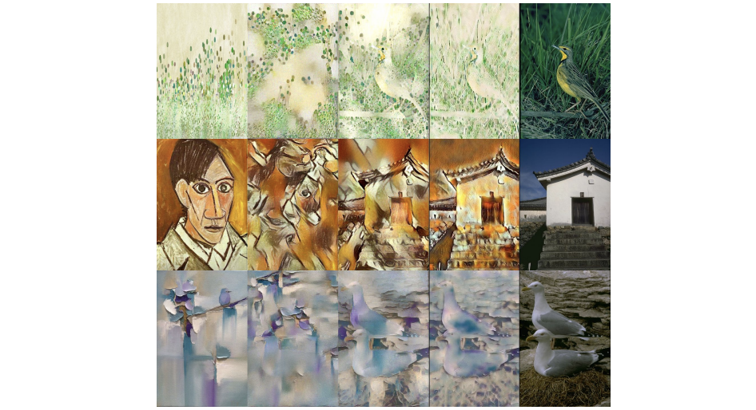
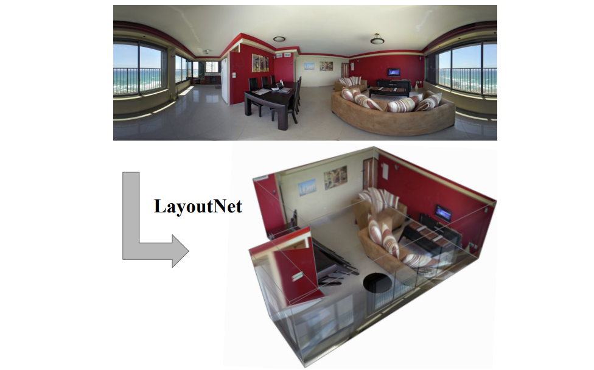

【HOME】
Publications
(Google scholar)
Hybrid Neural-MPM for Interactive Fluid Simulations in Real-Time
Jingxuan Xu, Hong Huang, Chuhang Zou, Manolis Savva, Yunchao Wei and Wuyang Chen
arxiv, 2025
Website arxiv
MVGBench: a Comprehensive Benchmark for Multi-view Generation Models
Xianghui Xie, Chuhang Zou, Meher Gitika Karumuri, Jan Eric Lenssen and Gerard Pons-Moll
arxiv, 2025
Website arxiv
 Direct and Explicit 3D Generation from a Single Image
Direct and Explicit 3D Generation from a Single Image
Amazon's First 3D Foundation Model in Use!
Haoyu Wu, Meher Gitika Karumuri, Chuhang Zou, Seungbae Bang, Yuelong Li, Dimitris Samaras and Sunil Hadap
International Conference on 3D Vision (3DV), 2025
Website Paper
MonoPatchNeRF: Improving Neural Radiance Fields with Patch-based Monocular Guidance
Yuqun Wu, Jae Yong Lee, Chuhang Zou, Shenlong Wang, and Derek Hoiem
International Conference on 3D Vision (3DV), 2025
Website Paper Code
Plenoptic PNG: Real-Time Neural Radiance Fields in 150 KB
Yuqun Wu, Jae Yong Lee, Chuhang Zou, Derek Hoiem and Shenlong Wang
International Conference on 3D Vision (3DV), 2025
Website Paper Code
Ordinal focal loss: A relative fashionability ranking learning method
Ling Ma, Chuhang Zou, Ziyi Guo, Tao Li, Zheng Liu and Fengyuan Zou
Information Processing & Management (IPM), 2025
Paper
 Language-driven Description Generation and Common Sense Reasoning for Video Action Recognition
Language-driven Description Generation and Common Sense Reasoning for Video Action Recognition
Xiaodan Hu, Chuhang Zou, Suchen Wang, Jaechul Kim and Narendra Ahuja
arxiv, 2025
Paper
Recurrent Transformer Variational Autoencoders for Multi-Action Motion Synthesis
Rania Briq, Chuhang Zou, Leonid Pishchulin, Christopher Broaddus, Jürgen Gall
IEEE Conference on Computer Vision and Pattern Recognition Workshop, 2022.
Paper
QFF: Quantized Fourier Features for Neural Field Representations
Jae Yong Lee, Yuqun Wu, Chuhang Zou, Shenlong Wang, and Derek Hoiem
arxiv, 2022
Paper
Deep PatchMatch MVS with Learned Patch Coplanarity, Geometric Consistency and Adaptive Pixel Sampling
Jae Yong Lee, Chuhang Zou and Derek Hoiem
arxiv, 2022
Website Paper Code
Manhattan Room Layout Reconstruction from a Single 360 image: A Comparative Study of State-of-the-art Methods
Chuhang Zou, Jheng-Wei Su, Chi-Han Peng, Alex Colburn, Qi Shan, Peter Wonka, Hung-Kuo Chu and Derek Hoiem
International Journal of Computer Vision (IJCV), 2021
Paper Code Data
PatchMatch-RL: Deep MVS with Pixelwise Depth, Normal, and Visibility
Oral
Jae Yong Lee, Joseph DeGol, Chuhang Zou and Derek Hoiem
IEEE International Conference on Computer Vision (ICCV), 2021
Website Paper Code
 Multi-Task Learning from Videos via Efficient Inter-Frame Attention
Multi-Task Learning from Videos via Efficient Inter-Frame Attention
Donghyun Kim, Lan Tian, Chuhang Zou, Ning Xu, Bryan A. Plummer, Stan Sclaroff, Jayan Eledath, Gerard Medioni
IEEE International Conference on Computer Vision Workshop, 2021.
Paper
Silhouette Guided Point Cloud Reconstruction beyond Occlusion
Chuhang Zou and Derek Hoiem
Winter Conference on Applications of Computer Vision (WACV), 2020
Paper arxiv Code
 Improving Style Transfer with Calibrated Metrics
Mao-Chuang Yeh, Shuai Tang, Anand Bhattad, Chuhang Zou and David Forsyth
Winter Conference on Applications of Computer Vision (WACV), 2020
Paper Code
 Complete 3D Scene Parsing from an RGBD image
Complete 3D Scene Parsing from an RGBD image
Chuhang Zou, Ruiqi Guo, Zhizhong Li and Derek Hoiem
International Journal of Computer Visionn (IJCV), 2019
Paper arxiv Data
Counterfactual Depth from a Single RGB Image
Theerasit Issaranon, Chuhang Zou and David Forsyth
IEEE International Conference on Computer Vision Workshop, 2019
Paper Code
 LayoutNet: Reconstructing the 3D Room Layout from a Single RGB Image
Chuhang Zou, Alex Colburn, Qi Shan and Derek Hoiem
IEEE Conference on Computer Vision and Pattern Recognition (CVPR), 2018
Paper Code The 10 coolest papers from CVPR 2018 Naver Labs Europe Blog Synced AI Technology & Industry Review (Chinese) Seamless (Japanese) YouTube 3rd Party Intro ZhiHu
3D-PRNN: Generating Shape Primitives with Recurrent Neural Networks
Chuhang Zou, Ersin Yumer, Jimei Yang, Duygu Ceylan and Derek Hoiem
IEEE International Conference on Computer Vision (ICCV), 2017
Paper Code Data
Extraction and Classification of She Nationality Clothing via Visual Features
Xiaojun Ding, Chuhang Zou, Jingyu Chen and Fengyuan Zou
Textile Research Journal (TRJ), 2015
Paper
Predicting Complete 3D Models of Indoor Scene
Ruiqi Guo, Chuhang Zou and Derek Hoiem
arxiv, 2015
Paper Code
Salient Object Detection via Fast Iterative Truncated Nuclear Norm Recovery
Full Oral
Chuhang Zou, Yao Hu, Deng Cai and Xiaofei He
International Conference on Intelligence Science and Big Data Engineering (ISCIDE), 2013
Paper